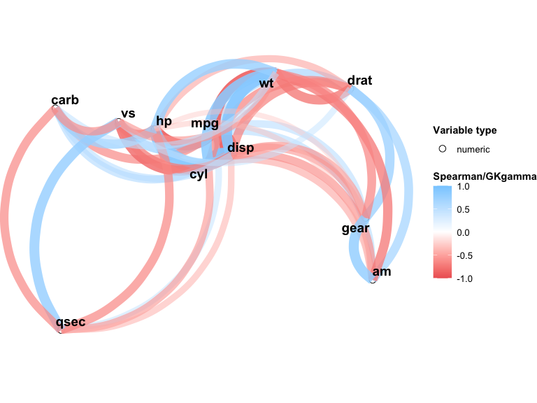
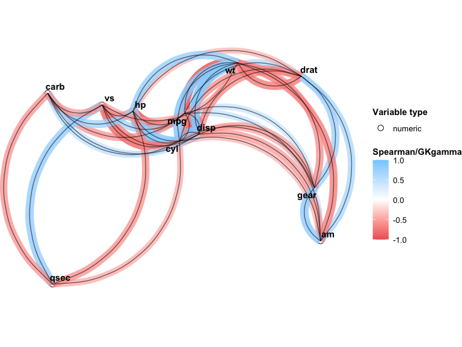

VisXplore is an R package for interactive data preprocessing and variable selection across mixed variable types. It computes pairwise correlations and associations for numeric, nominal (factor), and ordinal variables and visualizes the results as a network plot. It supports real-time data preprocessing and presents important information for variable selection.
VisXplore offers both a code-forward S3 API for use in R scripts and notebooks, and an optional Shiny app for interactive exploration.
Installation
You can install the development version of VisXplore from GitHub with:
# install.packages("devtools")
devtools::install_github("CU-Anschutz-GMWG/VisXplore")Pairwise association
The core function pairwise_cor() computes a pairwise association matrix for all variables in a data frame. The association measure depends on the variable types involved:
| Variable pair | Measure |
|---|---|
| Numeric vs. numeric | Spearman rho |
| Factor vs. any | Pseudo R-squared (multinomial regression) |
| Ordinal vs. ordinal/numeric | Goodman-Kruskal gamma |
library(VisXplore)
result <- pairwise_cor(mtcars)
result
#> Pairwise associations for 11 variables (11 numeric)
#> 45 of 55 pairs significant at p < 0.05
#>
#> Variables: mpg, cyl, disp, hp, drat, wt, qsec, vs, am, gear, carbUse summary() to view the full association matrix with significance stars:
summary(result)
#> Correlation/Association Matrix
#> Significance: **** p<0.0001, *** p<0.001, ** p<0.01, * p<0.05
#>
#> cyl disp hp drat wt qsec vs
#> mpg -0.91**** -0.91**** -0.89**** 0.65**** -0.89**** 0.47** 0.71****
#> cyl 0.93**** 0.9**** -0.68**** 0.86**** -0.57*** -0.81****
#> disp 0.85**** -0.68**** 0.9**** -0.46** -0.72****
#> hp -0.52** 0.77**** -0.67**** -0.75****
#> drat -0.75**** 0.09 0.45*
#> wt -0.23 -0.59***
#> qsec 0.79****
#> vs
#> am
#> gear
#> am gear carb
#> mpg 0.56*** 0.54** -0.66****
#> cyl -0.52** -0.56*** 0.58***
#> disp -0.62*** -0.59*** 0.54**
#> hp -0.36* -0.33 0.73****
#> drat 0.69**** 0.74**** -0.13
#> wt -0.74**** -0.68**** 0.5**
#> qsec -0.2 -0.15 -0.66****
#> vs 0.17 0.28 -0.63****
#> am 0.81**** -0.06
#> gear 0.11Use plot() to generate a network plot where node positions are derived from MDS on the dissimilarity matrix (1 - |association|), and edges represent associations above a minimum threshold:
plot(result, min_cor = 0.3)
You can also customize the network plot directly with npc_mixed_cor():
npc_mixed_cor(result, min_cor = 0.5, show_signif = TRUE, label_size = 4)
Mixed variable types
When your data includes factor or ordinal variables, specify the types explicitly:
types <- c("numeric", "factor", rep("numeric", 5), rep("factor", 2),
rep("ordinal", 2))
result_mixed <- pairwise_cor(mtcars, types)
result_mixed
#> Pairwise associations for 11 variables (6 numeric, 3 factor, 2 ordinal)
#> 44 of 55 pairs significant at p < 0.05
#>
#> Variables: mpg, cyl, disp, hp, drat, wt, qsec, vs, am, gear, carbData quality checks
Use data_check() to identify empty or zero-variance columns before analysis:
df <- data.frame(x = rnorm(10), y = 1, z = NA)
data_check(df)
#> Warning: z missing for all observations
#> Warning: y with same value for all observationsData transformations
VisXplore provides helper functions for common preprocessing steps that return data frames ready to be column-bound with the original data:
df <- data.frame(a = exp(1:5), b = (1:5)^2, c = 11:15)
# Log or sqrt transform
visx_transform(df, c("a", "b"), fun = "log")
#> a_log b_log
#> 1 1 0.000000
#> 2 2 1.386294
#> 3 3 2.197225
#> 4 4 2.772589
#> 5 5 3.218876
# Compute a ratio of two columns
visx_ratio(df, "a", "b")
#> a_over_b
#> 1 2.718282
#> 2 1.847264
#> 3 2.231726
#> 4 3.412384
#> 5 5.936526
# Row-wise mean across columns
visx_mean_vars(df, c("a", "b", "c"))
#> mean_var
#> 1 4.906094
#> 2 7.796352
#> 3 14.028512
#> 4 28.199383
#> 5 62.804386
# Collapse factor levels
colors <- data.frame(color = c("red", "blue", "green", "red", "blue"))
visx_collapse_levels(colors, "color", c("red", "blue"), "warm_cool")
#> color_bin
#> 1 warm_cool
#> 2 warm_cool
#> 3 green
#> 4 warm_cool
#> 5 warm_coolInteractive Shiny app
For point-and-click exploration, launch the built-in Shiny app. It provides tabs for the network plot, variable distributions, correlation matrix, summary statistics, and data transformations:
VisXplore(mtcars)